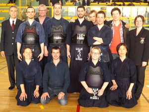
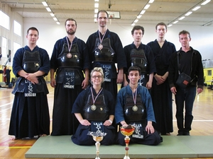

Félicitations à tous les membres du club de Lille qui ont présenté ce week-end leur grade à Bruxelles. Voici les résultats :
| KENDO 2ème DAN > Johann RADENNE > Sylvain WILLAERT |
KENDO 3ème DAN > Olivier BAYART > Basile CAPPUYNS |
Félicitations à tous les membres du club de Lille qui ont présenté ce week-end leur grade à Bruxelles. Voici les résultats :
| KENDO 2ème DAN > Johann RADENNE > Sylvain WILLAERT |
KENDO 3ème DAN > Olivier BAYART > Basile CAPPUYNS |
Bravo aux participant(e)s des championnats de France « honneurs » et « féminines » 2013, et toutes nos félicitations à Aurélia pour sa médaille d’argent ainsi qu’à Stéphanie pour sa médaille de bronze. Bravo à toutes et à tous !
 |
Félicitations et merci aux pratiquants qui ont représenté le club de Lille à la Compétition annuelle de Thourotte.
Résultats pour les individuels femmes :
| DE BACKER Stéphanie | CLUB LILLOIS | 1er |
| BIGEX Raphaelle | USML | 2ème |
| MAAZIZ Lyna | USML | 3ème |
| WOJCZYNSKI Justine | BUSHINDO | 3ème |
| NAKABAYASHI Seiko | USML | Fighting Spirit |
Résultats pour les individuels hommes :
| DEGRUGILLIER Léopold | CLUB LILLOIS | 1er |
| Mc CAHON Walter | 2ème | |
| JOURDAN Jean-Philippe | CLUB LILLOIS | 3ème |
| LONGUEPE Romain | CLUB LILLOIS | 3ème |
| DELOBELLE Clément | Fighting Spirit |
Résultats pour les équipes :
| CUTEY BOYS | 1er |
| RAB | 2ème |
| LILLE 2 | 3ème |
| LILLE 1 | 3ème |
| Mathias GABER | Fighting Spirit |
Composition des équipes :
| CUTEY BOYS : GOULLON Julien GRESSIEN Quentin MAC-CAHON Walter |
LILLE 2 DE BACKER Stéphanie MAYEUR Sébastien |
RAB BERTOUT Jonathan GIROT Alain LEFERT Xavier |
LILLE 1 CARPENTIER Jean DEGRUGILLIER Léopold LONGUEPE Romain |
 |
Bravo à tous les participants de la 21ème Coupe des Alpes et notamment à l’équipe lilloise qui est arrivée 3ème de cette compétition : bravo à Stéphanie, Aurélia, Valentine, Jean, Léopold et Jean-Philippe !
Félicitations aux 1ers (Paris), aux 2èmes (St Etienne) et aux 3èmes ex-aequo (Lyon 5) et bien sur à tous les autres participants !
Le Paris Jodo Saï vient de s’achever, réunissant un grand nombre de pratiquants français et quelques jodokas venant de toute l’Europe (Autriche, Pologne, Russie, Hongrie).
Lors du tournoi open, le club a remporté la première place dans la catégorie 4e dan (Olivier Bayart)

Le stage de Lille de Kendo est maintenant terminé. Nous remercions tous les pratiquants présents lors de cette manifestation : pratiquants de Lille ainsi que les amis de l’extérieurs. Nous espérons que le retour s’est fait sans encombre.
En attendant les stages à venir la photo de cette année est disponible sur la gallerie photo du site
-> ici <-
Ou en accès direct en cliquant -> ici <-
Le club Lillois de Judo Kendo vous souhaite une bonne pratique pour cette année 2013.
Félicitations à tous les membres du club de Lille qui ont présenté ce week-end leur grade à Bruxelles. Voici les résultats :
|
KENDO 2ème DAN |
KENDO 4ème DAN > Jean CARPENTIER |
KENDO 6ème DAN > Aurélia BLANCHARD |
Félicitations à tous les membres du club de Lille qui ont présenté ce week-end leur passage de grade à Bruxelles. Voici les résultats :
| KENDO 1er DAN : > Pascal ARS > Michel MAERTEN > Nicolas MAHIEUX > Grégory LIMORATTO > Nadia GEROUAOU > Simon KOZAK |
KENDO 3ème DAN : > Yukiko WASTERLAIN |
|||
| KENDO 4ème DAN : > Léopold DEGRUGILLIER |
IAIDO 2ème DAN : > Sandrine ESPARZA |
L’équipe Stéphanoise remporte le Trophée de Turin avec un combat décisif d’Aurélia. Bravo à tous et félicitations Aurélia !
L’équipe Lilloise médaillées d’argent à l’Open de Stockholm 2012. Bravo à Jean-Philippe, Romain et Jean-Paul !
{kind=link}
{kind=link}
{kind=link}
{kind=link}
{kind=link}